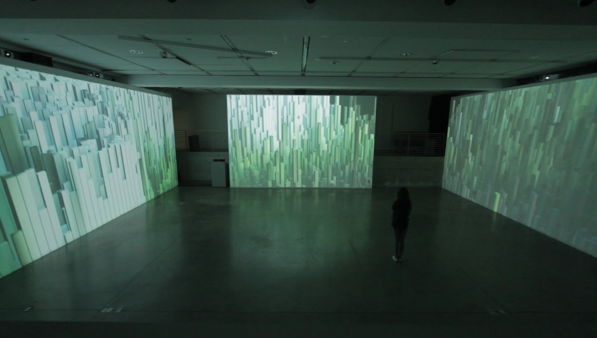
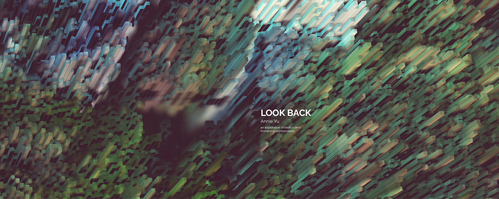
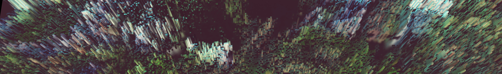
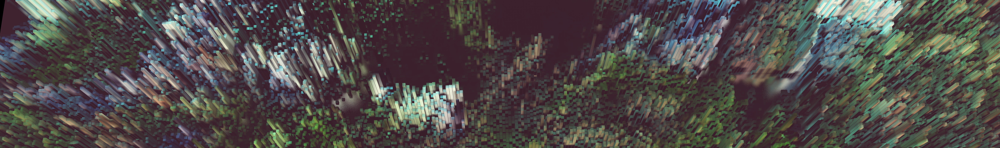
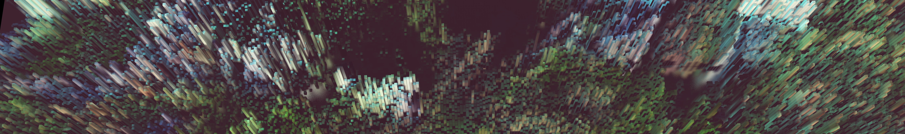

3-d modeling, animation, graphic, 2016
Look Back encapsulates the feeling of biding time and looking at past memories while waiting to see a loved one. It stutters and ebbs in and out, trying to move from one point in time to another.


 

